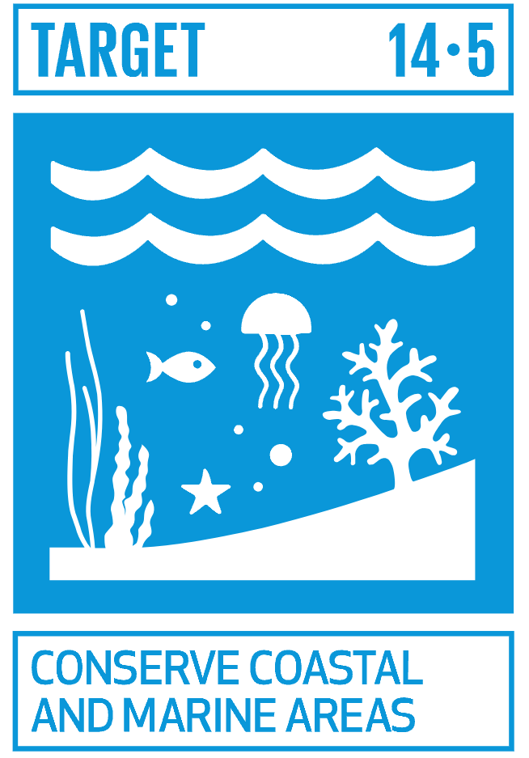
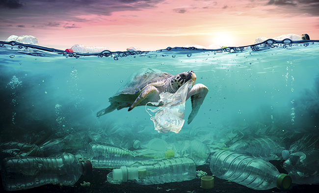
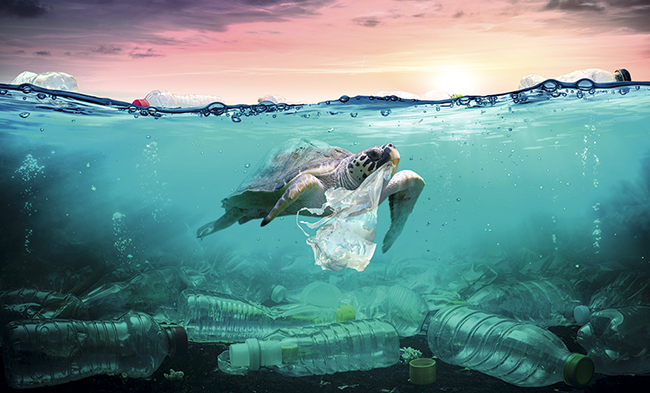
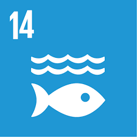
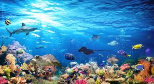
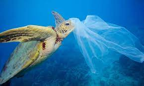
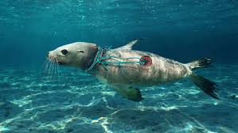

ODS 14: VIDA SUBMARINA

Segunda meta: Conservar áreas costeras y marinas protegiéndolas
Índice:
- ¿Qué esta pasando?
- ¿Qué estaríamos salvando?
- ¿Cómo podríamos contribuir?
- Importancia
¿Qué esta pasando?
El océano se encuentra en estado de emergencia, ya que el aumento de la eutrofización, de la acidificación, del calentamiento de los océanos y de la contaminación por plásticos empeoran su salud. Además, persiste la alarmante tendencia a la sobrepesca, que ha provocado la desaparición de más de un tercio de las poblaciones mundiales de peces. Algo que a largo plazo podría acabar con la vida marina y el óceano, por lo tanto, también con nuestra existencia.
¿Qué estaríamos salvando?
Como fue mencionado anteriormente, este problema del océano está acabando con la población de animales marinos, como también con sus ecosistemas, algo que es injusto tanto para los animales como para la tierra. Al tener conciencia de este problema estaríamos salvando todos esos ecosistemas y pobres vidas, pobres vidas que también hay que tener en cuenta que son fuente de alimento y la desaparición de ellos nos afecta directamente a nosotros.
¿Cómo podríamos contribuir?
El objetivo 14 de la ODS, se encarga unicamente de todo lo relacionado a la vida marítima. Tiene metas como prevenir la contaminación, prohibir la pesca excesiva, alertarnos a todos sobre este estado de emergencia, etc. Pero hay una meta que es parte de las principales, la cual se relaciona y conecta muy bien con las demás. Esa es la que habla sobre conservar las áreas costeras y marinas protegiéndolas. Debemos conservar y proteger las costas y el óceano, dejar de contaminar tirando cosas a la arena o al mar. Dejar de desechar productos que todavía podemos darles un uso, como también dejar el consumismo, ya que ¿sabían que mas del 50% de la basura llega al mar? pues si, así es, la mayoría de nuestros desechos terminan en el mar, y allí tardan años, décadas o incluso siglos en descomponerse.
Importancia
Tomar acción es muy importante por todo lo mencionado anteriormente, pero eso no es lo único con lo que debemos contar. Tenemos que tener en cuenta que mientras más tiempo pase, esto poco a poco se nos va escapando de nuestras manos; pues cada día más y más basura va llegando a profundidades que es difícil o incluso imposible que humanos lleguen; haciendo que el proceso de salvación en unos años vaya a ser completamente inalcanzable e inviable. Es por eso que debemos actuar desde ahora y no esperar a lo peor. Recuerden que guerra avisada no mata gente.
 

© Santiago Suarez Bechara
La Vida Submarina
En 2015, la ONU aprobó la agenda 2030 sobre el desarrollo sostenible, una oportunidad para que los países y sus sociedades aprendieran un nuevo camino con el que mejorar la vida de todas las personas, sin dejar nadie atrás. El catorceavo objetivo es Conservar y utilizar sosteniblemente los océanos, los mares y los recursos marinos para el desarrollo sostenible.
Los océanos son el punto en el que se unen el planeta, las personas y la prosperidad, y en eso consiste el desarrollo sostenible: en que todos nosotros, como accionistas de la empresa que es la Tierra, reconozcamos la responsabilidad que tenemos para con el planeta, las personas y los océanos, que son su fuerza vital, y actuemos en consecuencia.

¿Pórque es importante prevenir y reducir significativamente la contaminación marina de diversas fuentes?
La contaminación es una de las mayores desafíos del planeta. Datos de la ONU confirman que cada año se arrojan al mar casi 8 millones de toneladas de plástico y estos residuos se han encontrado incluso a 10.000 metros de profundidad. Reducir el consumo de estos materiales es importante para reducir su impacto en el medio ambiente.

Que puedes hacer tú para ayudar:
Existen innumerables pequeñas acciones diarias con las que puedes contribuir individualmente a una mejor protección de los océanos y mares. Tanto si vives en una ciudad costera como si vas allí de forma ocasional o habitual.
- Utiliza menos productos de plástico:
El plástico es una de las principales amenazas para el océano. Para no contaminar el mar, puedes dejar de utilizar botellas de plástico y sustituirlas por termos, además de utilizar bolsas de tela para transportar las compras.
- Haz compras sostenibles de productos de mar:
Muchas especies están amenazadas de extinción debido a la demanda y a las malas prácticas de pesca. Es importante buscar marcas o empresas que vendan productos marinos que tengan prácticas sostenibles certificadas.
- Usa productos biodegradables en las playas:
Hay protectores solares y bronceadores que son biodegradables y no dañan a las especies marinas; Intenta comprar este tipo de productos, donde la etiqueta indica que es respetuoso con el medio ambiente y con eso te asegurarás de no contaminar el mar.
- No tires basura en las playas:
Durante las vacaciones es importante cuidar los residuos producidos y no esperar que otra persona se haga cargo de ellos. Muestra tu cultura de respeto al medio ambiente y, si encuentras basura en la calle, puedes ayudar a recogerla. Con esta sencilla acción ayudarás a reducir la presencia de residuos en el agua y evitarás los efectos de la contaminación.
- Viaja por el mar responsablemente:
Si practicas deportes como kayak u otras actividades realizadas en el agua, no arrojes nada al mar y sé consciente de la vida marina que vive en las aguas que te rodean. Si estás pensando en hacer un crucero, elige la opción más respetuosa con el medio ambiente.
- No compres productos que afectan la vida marina:
Evite comprar productos que dañen los ecosistemas marinos, como joyas de coral o conchas o accesorios elaborados con tortugas carey o tiburones. Una buena forma de evitar la contaminación marina es evitar comprar productos que provengan del océano.
- Reduce las emisiones de CO₂ y consumo de energía:
El impacto del cambio climático en los océanos se puede reducir reduciendo las emisiones de CO₂ mediante pequeñas acciones como dejar o reducir el uso del coche, cambiar a bombillas fluorescentes compactas, apagar las luces, etc.
- Apoya organizaciones que trabajan a favor de los océanos:
Hay muchas organizaciones que trabajan para proteger los hábitats marinos; puedes apoyar a estas instituciones con voluntariado, apoyo económico o promoción.
- No bebas agua embotellada:
Aprovechemos la calidad del agua de España y bebamos agua del grifo. Así estarás reduciendo el uso de envases y la contaminación de nuestros mares y nuestro planeta.
- Reduce y recicla:
Si ya no puedes reducir más el consumo de plástico, reutiliza estos productos siempre que sea posible y recicla en los contenedores correspondientes.


5 Soluciones para la contaminación del agua:
- Reducir las emisiones de CO2 para evitar el calentamiento terrestre y la acidificación de los océanos.
- Atenuar el uso de plaguicidas químicos y nutrientes en los cultivos agrícolas.
- Disminuir y depurar las aguas residuales de forma segura para que, además de no contaminar, puedan reutilizarse para el regadío y la producción de energía.
- Limitar el uso de plásticos de un solo uso que acaban flotando en ríos, lagos y océanos, muchos en forma de microplásticos.
- Fomentar la pesca sostenible para garantizar la supervivencia de las especies y evitar el empobrecimiento de los mares.
Ir al principal